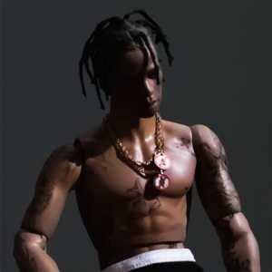
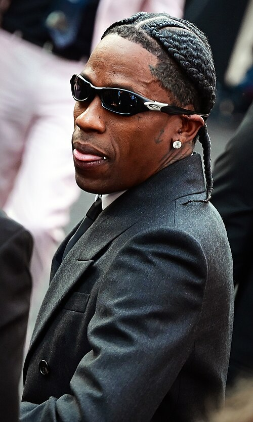
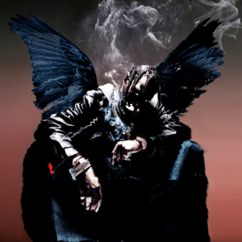
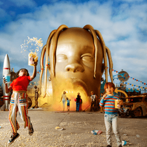
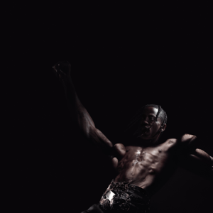
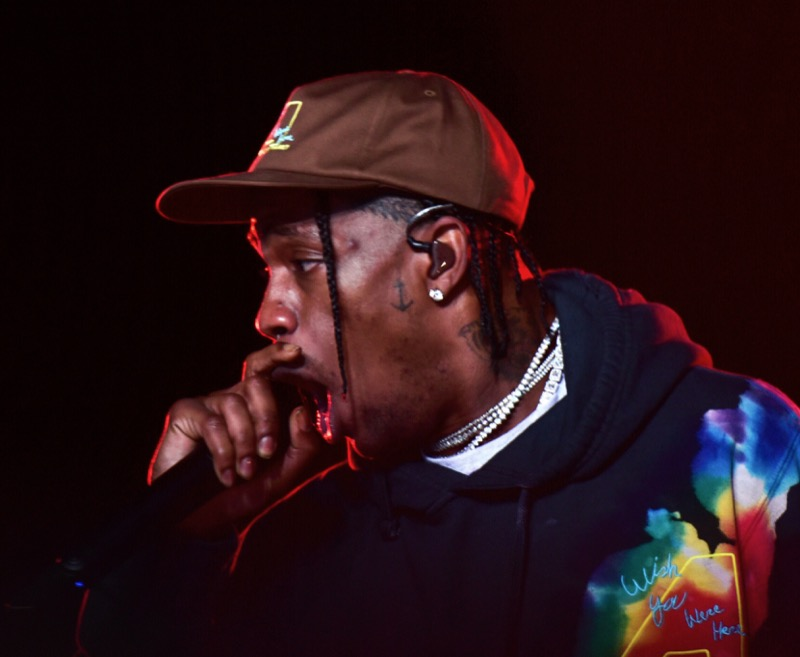
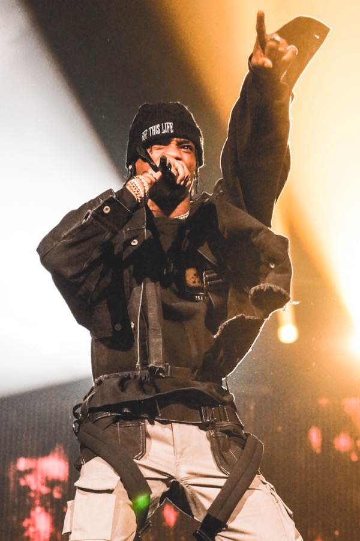
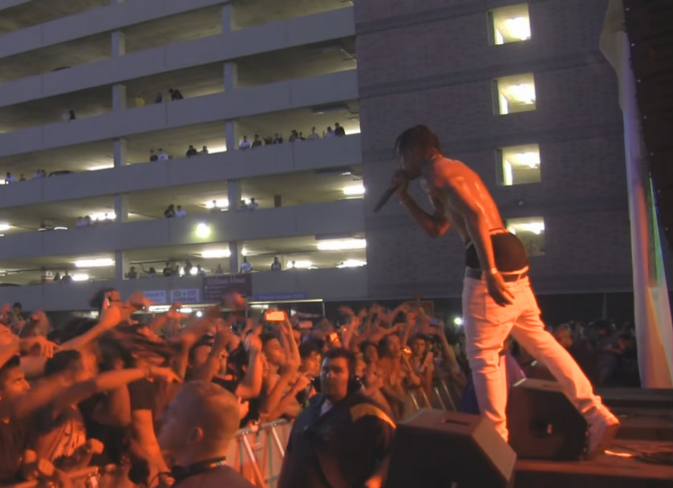
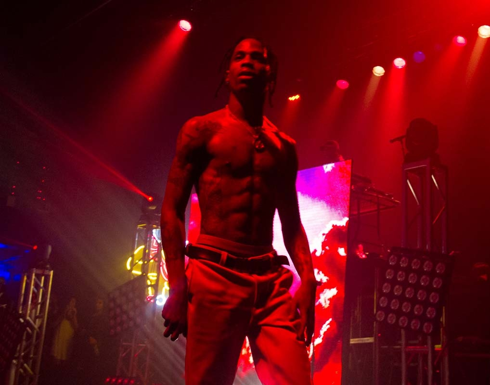

LP // 01
[01 // BIOGRAPHY]
Досье и путь

JACQUES BERMON WEBSTER II
LA FLAME
Жак Бермон Вебстер II (род. 30 апреля 1991), известный как Travis Scott, — американский артист, автор песен и саунд-продюсер из Хьюстона, штат Техас.
Свою карьеру он начал с андеграундных микстейпов и публикаций на SoundCloud, после чего привлёк внимание Канье Уэста и T.I., подписав контракты с Epic Records, Grand Hustle и GOOD Music в качестве штатного продюсера. В 2017 году основал собственный креативный лейбл и объединение Cactus Jack Records.
Трэвис сформировал узнаваемый психоделический трэп-саунд с перегруженным басом, автотюном и сменами ритма внутри одного трека, а его коллаборации с Nike, Jordan Brand и A24 вышли далеко за рамки музыкальной индустрии.
[02 // DISCOGRAPHY]
Ключевые альбомы
Нажмите на карточку релиза, чтобы раскрыть архивную справку

LP // 02Birds in the Trap Sing McKnight
2016
LP // 03ASTROWORLD
2018
LP // 04UTOPIA
2023
[03 // ARCHIVE NOTES]
Факты и хроника
Нажмите кнопку ниже, чтобы загрузить случайный факт из биографии и студийной хроники артиста.
[04 // VISUALS]
Визуальный ряд




[05 // EXTERNAL]